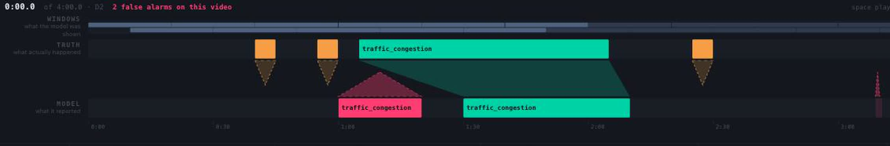

| Training data | Scored on | |
|---|---|---|
| Videos | 3,173 short clips, 5–30 s | 240–629 s |
| Events | exactly one per clip | up to 6, mixed classes |
| Timestamps | event ≡ whole clip for 7 of 11 classes | gated at tIoU ≥ 0.5 |
| Marks | D1 = 25 | D2 + D3 = 75 |
75 of the 100 marks had no training data at all. We synthesised 360 long multi-event videos with exact ground truth — then measured the shortcut we had just created, rather than assuming it away.
A model trained on spliced video learns event onset ≡ cut: brilliant on synthetic data, collapsing on real footage, which has no cuts. We censused pre-event footage per class first — 6 of 11 classes have literally none.
| naive splice | after fix | target | |
|---|---|---|---|
| P(event | cut) | — | 0.10 | low |
| P(cut | event start) | ~0.70 | 0.536 | 0.4–0.5 |
0.536 is near the honest floor given those 6 classes. We report it rather than hide it.

Truth above, model below, joined by a ribbon — a perfect match is a rectangle, a timing error a visible skew. It imports the same matcher that scores the run, so the page cannot disagree with the score.
A new window closes every 10 s of video and is scored in 1.83 s. The system keeps up with 5.5× headroom, and still 2.8× at the 95th percentile — so real-time holds on the tail, not just on average.
| Model | P | R | F1 | silent |
|---|---|---|---|---|
| Qwen3-VL-4B chosen | 0.77 | 0.50 | 0.61 | 8/24 |
| Qwen3-VL-8B | 0.62 | 0.40 | 0.48 | 8/24 |
| Cosmos-Reason2-8B | 0.57 | 0.20 | 0.30 | 13/24 |
| Qwen3-VL-2B | 0.30 | 0.15 | 0.20 | 12/24 |
| Qwen2.5-VL-7B | 0.00 | 0.00 | 0.00 | 20/24 |
The 4B and 8B are statistically indistinguishable (slide 2). We ship the 4B: half the size at equal accuracy.
| # | Failure | Would have read as |
|---|---|---|
| 1 | ffmpeg -t silently returns a shorter segment | later timestamps wrong |
| 2 | 49 of 2,092 train rows have end ≤ start | garbage spans |
| 3 | Clip pool keyed on folder, not class label | normal traffic taught as wrong-way |
| 4 | Empty output ≡ correct "no events" | a parser bug scoring clean |
| 5 | One bad API response cut a 34-video run to 6 — exit code 0 | a complete run, real score |
| 6 | Buffered output hid a 20-minute GPU job | a hang |
| 7 | The fix for #5 caused #7: error handling wrote 10 failures as "events": [] | a model that is just bad |
All seven would have read as "the model just isn't very good." #7 was caught only by the diagnostic added for #4 — recording raw model text on every empty result. Each is now a test.
Bigger is worse: Qwen3-VL-4B beats the 8B,
F1 0.61 vs 0.48.
| Video | Truth | 4B | 8B |
|---|---|---|---|
| T007 | traffic_accident | correct | silent |
| T011 | vehicle_blocking | silent | smoke |
| T014 | smoke | correct | fire |
The two models differ on three videos out of twenty-four. Sign test on 2 informative trials: p = 0.25. The whole F1 gap is 10 TP vs 8 TP — inside the ±1 TP noise band we had been telling everyone to apply, and then failed to apply ourselves.
Checked before retracting: both emit clean JSON, zero truncation, and the same number of empty windows — equally willing to answer.
Corrected claim: the 4B and 8B are indistinguishable here. We ship the 4B because it is half the size at equal accuracy.
| D1 output policy | TP | FP | FN |
|---|---|---|---|
| every predicted event | 10 | 12 | 10 |
| top-1 per video | 10 | 3 | 10 |
False alarms cut 4× at zero recall cost. A D1 video has at most one truth event, so the extras could only ever have been false alarms. One entrant on this leaderboard lost 26 of 35 marks to 94 false alarms. Does not transfer to D2/D3, where it deletes real detections.
| D2/D3 confidence gate | TP | FP |
|---|---|---|
| ≥ 0.5 | 1 | 31 |
| ≥ 0.7 | 1 | 31 |
| ≥ 0.9 | 1 | 29 |
0.5 → 0.9 removes two false alarms out of 31. Whatever gates them must come from outside the model's own score.
Cosmos-Reason2-8B tops NVIDIA's own Traffic Anomaly Reasoning leaderboard (AI City Challenge 2026, Track 3). On this data it reaches R 0.20 against a 4B model's R 0.50 — a gap of 6 true positives, well outside the noise band.
Qwen2.5-VL-7B — ASK-HINT's own published backbone, 89.83% AUC on UCF-Crime in that paper — is silent on 20 of 24. Named mechanism: it returns a bare [] 21 times instead of the requested object. That is instruction-following failure, not blindness, and it does not reproduce on aerial and dashcam footage with our prompt.
Qwen3-VL-2B: 14 of its empty windows are truncated output — part of its poor score is a token-budget artifact, not capability. We say that rather than "2B is too small".
Every paper in the supplied reading list evaluates on fixed-camera CCTV; a third of this data is drone and a third dashcam. Frame differencing assumes a still background. H.264 motion vectors are free out of the decoder — fit a global affine with RANSAC, and the residual is independently-moving objects.
Against a 2,000-trial permutation null, only one of six tested thresholds separates from chance (1.35× lift, p≈0.06 corrected). It does not work. So the cheap always-on gate in a cascade cannot be built this way — a real architectural constraint, settled in 1,165 CPU-seconds and no GPU.
What survived: ego-motion itself, free and per-second, recovering the domain field the manifest ships empty for all 34 videos — 15 videos barely move, 6 move part of the time, 13 move throughout.
| scored | of | marks / video | |
|---|---|---|---|
| D1 · 24 short clips | 12.1 | 25 | 1.04 |
| D2 · 6 × 240 s | 11.7 | 35 | 5.83 |
| D3 · 4 long videos | 0.0 | 40 | 10.00 |
| Total | 23.8 | 100 |
D2's 11.7 is exactly the empty-submission floor — we earned nothing there yet. And one D3 video is worth ten D1 videos, while we sit at zero on D3. The whole remaining opportunity is long-video temporal localisation, which is precisely the half the training data never contained.
Controlled runs killed two of three explanations for the model's silence: more frames does not help (24 and 32 are worse than 16), and neither prompt variant helps. Five interventions, zero improvements — leaving fine-tuning as the only lever, which is where slide 1's synthesised data goes.